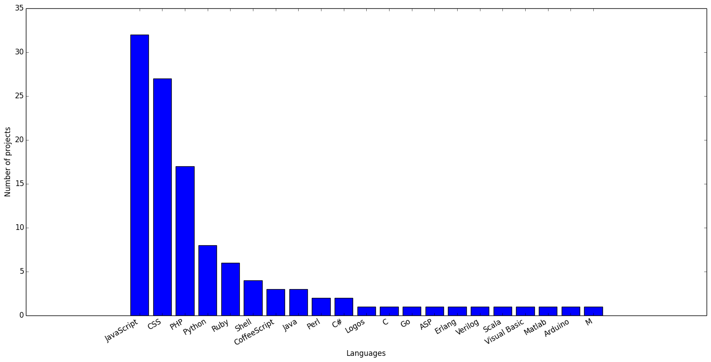
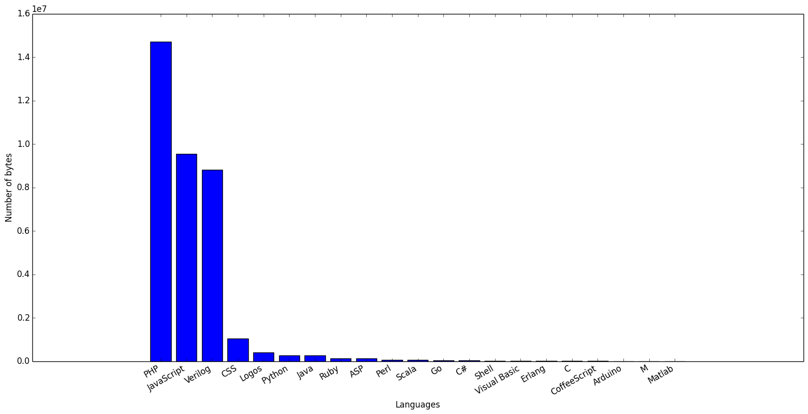
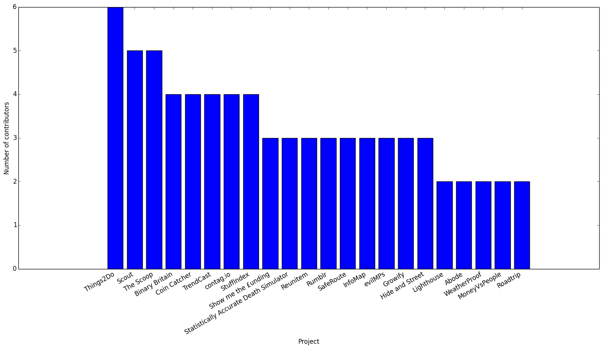
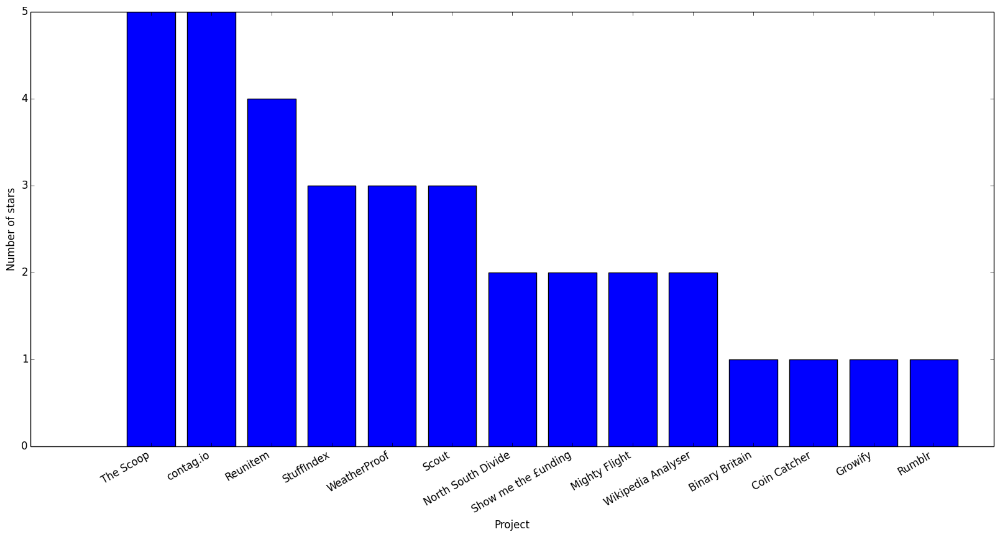
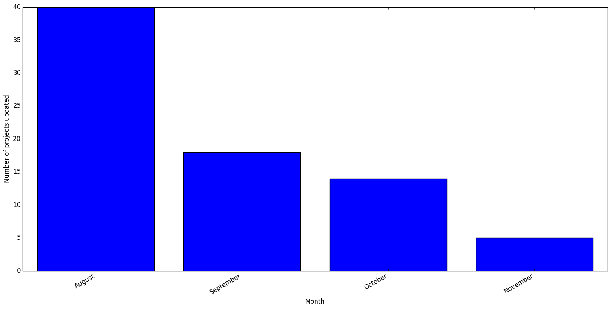

Young Rewired State 2013 - An Analysis
This August I participated in an event called Young Rewired State where people aged eighteen and under come together to make cool things with open data in a week. At the end of the week there is a big event where the projects are presented and prizes awarded. All of the projects, or “hacks”, can be found at this page. I thought it would be interesting to try and find some data on these projects, eg. what languages were used.
Method
To do this I decided to scrape the hacks page and get all the projects. I would then save the github url of each project, if it existed to a database with a few extra things like the name and if it was a finalist. Unfortunately only around forty projects had a Github repository, and only thirty-five of those had any code in them.
Data is then pulled down from Github like the number of stars, lagnuages used and contributors. Which is once again stored. Finally a seperate script creates charts from all this information. The code is available as a repository on github. If anyone wants me to write a blog post going into more detail on how it works I’ll happily do that. Feel free to tweet me.
The moment you’ve all been waiting for
Number of projects per language - So the first chart I made was of number of projects that use each language. Not very well worded, but hopefully the image will make it clearer:  As you can see the most used languages were Javascript, CSS and PHP - all web languages. This gives an idea of what most people create at YRS and that is websites. It turns out no one really writes DSLs as their YRS project. Go figure!
I was quite suprised at the variety of languages in so few projects. If I’m honest I was expecting everything to be written in PHP and JS, with the occasional bit of Ruby or Python thrown in. But, as you can see, there are quite a lot - everything from functional programming languages like Scala and Erlang to curly-braces, semicolon languages like C and Go.
Bytes of code per language - Next up is the number of bytes of code used per language. Normally amount of code is measured in lines of code, or LOC, however for some reason Github uses number of bytes. I decided to stick with it because it made my life a lot easier.  Ah - rather embarrissingly my own hack was decided to be made up of 99% Verilog by Github. I’m not entirely sure why as it contains a grand total of zero lines of Verilog. I have to presume it is due to the data that I use, which were generally very large files and for some reason this was counted as Verilog.
To be honest I do not believe this is a very good metric. One of the hacks contributes nearly all of the PHP statistics. Furthermore I expect the Javascript count will be inflated by people saving local copies of libraries like jQuery. I may well be wrong (I usually am) but just the fact that Verilog is so high up shows that this isn’t particularly useful.
Contributors per project - In this chart only projects that had more than one contributor are shown:  My experience of code collaboration usually involves email and dropbox so it’s nice to see that there are people who are more competent and better organised than me!
Github stars per project - Fairly self explanatory this one. Any project with one or more stars on Github are shown:  Well done to The Scoop and contag.io, who were starred more than any other project.
Number of projects updated per month - This is one that is quite interesting. It shows whether projects are continued and worked upon after the event:  And the short answer is yes! About half of the projects that had code in them were updated during September and even now in November, several months after the event, a few projects are still being worked on. I think this is really awesome!
Problems
So as I have already alluded to, this isn’t that accurate. I think it’s important to reiterate that this can only be used as a guide because:
- Only forty of the hacks had a github page that I could find, and so only that number were included in the plots. Some repos looked to have been deleted or the url was not spelt correctly
- Github doesn’t seem to be fantastic at listing the languages used in the repository
- I made this so who knows what weird and wonderful errors I have managed to come up with
- The graphs are ugly. I made them really quickly with matplotlib, which I am not an expert at
Round up
Anyway, I think that this post is quite an interesting, if not entirely statistically accurate, look at the YRS hacks.
If you can think of any more graphs you would like me to plot, want me to go into more detail on how all this was done or anything else then send me a tweet @hailmattyhall